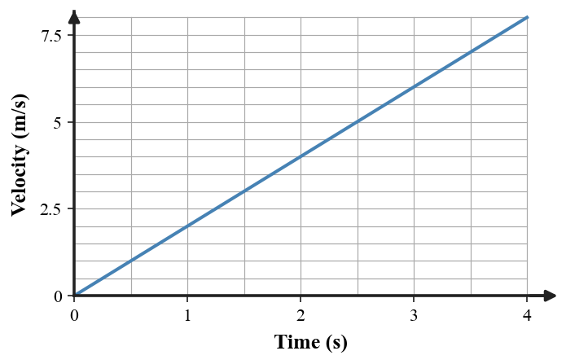
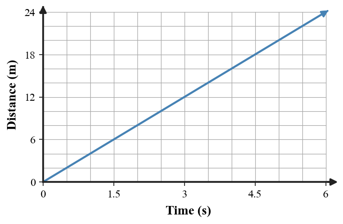
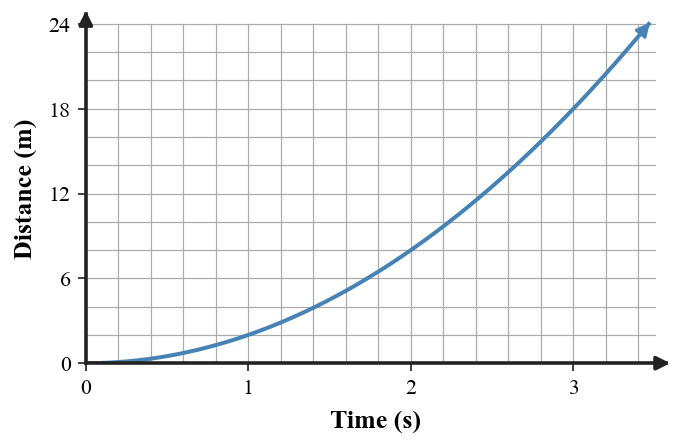
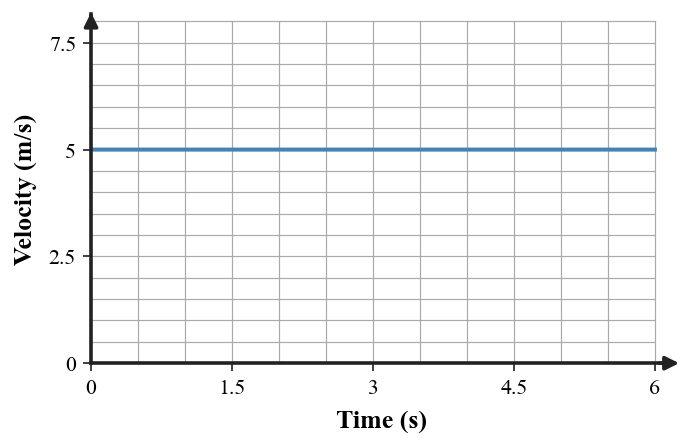
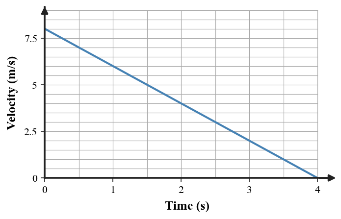
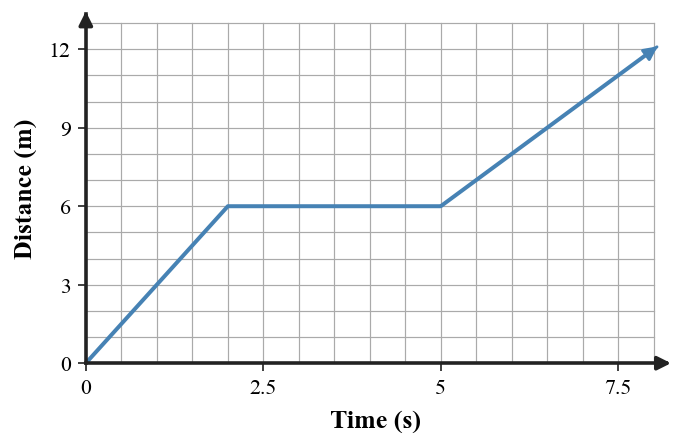
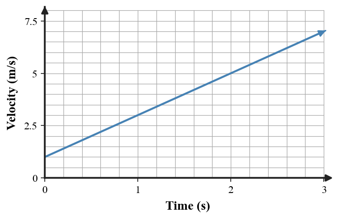
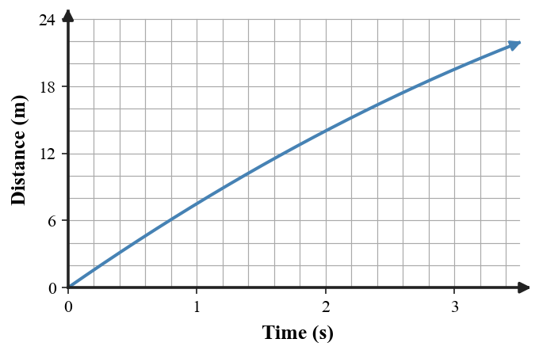

Determine whether the graph, table, and story all describe the same motion.

| Time (s) | Velocity (m/s) |
|---|---|
| 0 | 0 |
| 1 | 2 |
| 2 | 4 |
| 3 | 6 |
Story: The cart starts from rest and gains 2 m/s of velocity each second.
State consistent or not consistent and defend with two pieces of evidence.
Check the three representations for agreement.

| Time (s) | Distance (m) |
|---|---|
| 0 | 0 |
| 2 | 8 |
| 4 | 16 |
| 6 | 24 |
Story: The robot moves at a constant speed of 4 m/s.
Are all three consistent? Explain.
One representation does not match the other two.

| Time (s) | Distance (m) |
|---|---|
| 0 | 0 |
| 1 | 2 |
| 2 | 8 |
| 3 | 18 |
Story: The cart travels equal distances during equal time intervals.
Identify the mismatch and revise the story so all representations agree.
Compare the graph, table, and statement.

| Time (s) | Velocity (m/s) |
|---|---|
| 0 | 5 |
| 2 | 5 |
| 4 | 5 |
| 6 | 5 |
Story: The object has constant velocity in the positive direction.
Decide whether they are consistent and justify using graph shape and table pattern.
The graph is the reference model.

Choose which table is consistent, then explain why the other is not.
| Table | Velocity values (m/s) |
|---|---|
| A | 0: 8, 1: 6, 2: 4, 3: 2 |
| B | 0: 2, 1: 4, 2: 6, 3: 8 |
A distance-time graph is shown.

Student description: “The object moves the whole time but just gets slower in the middle.”
Critique the description and replace it with one that matches the graph.
Use the graph and table together.

| Time (s) | Velocity (m/s) |
|---|---|
| 0 | 1 |
| 1 | 3 |
| 2 | 5 |
| 3 | 7 |
A classmate says the acceleration gets larger every second. Evaluate the claim using both representations.
Three pieces of evidence are intended to describe one motion.

| Time (s) | Distance (m) |
|---|---|
| 0 | 0 |
| 1 | 7.5 |
| 2 | 14 |
| 3 | 19.5 |
Story: The object is slowing down while continuing forward.
Decide whether the table supports the graph/story. Explain using the change in distance each second.